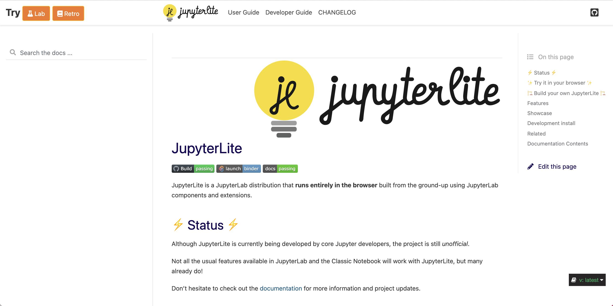

5. Directions technologiques#
Les directions technologiques de Candyce répondent à des besoins de différents ordres.
Donner accès à Jupyter à des millions d’utilisateurs, sans installation#
Passage à l’échelle#
Le programme Candyce devra permettre à plusieurs millions d’utilisateurs (et plusieurs dizaines de milliers d’utilisateurs concurrents) d’accéder à des environnements virtuels Jupyter via un simple navigateur. Cela passera par le déploiement d’une infrastructure nationale, hébergée sur un cloud souverain.
Les objectifs pour un tel déploiement sont:
une haute disponibilité,
une « scalabilité » permettant aux ressources cloud d’êtres allouées dynamiquement en fonction des besoins,
une résistance aux attaques de type « DDOS » (Déni de Service), à la fois dans la conception de l’infrastructure (avec des méthodes comme le rate limiting) et via l’usage d’outils tiers.
Une des principales tâches du Lot 1a est le développement du back-end de l’infrastructure permettant ce passage à l’échelle.
Connexions internet intermittentes ou à forte latence#
L’infrastructure nationale Candyce devra permettre d’exécuter les carnets (ou autres applicatifs) entièrement dans le navigateur, pour répondre aux besoins des établissements avec des connexions internet intermittentes où à forte latence.
Dans l’architecture « classique » de Jupyter, l’édition du carnet a lieu dans le navigateur, tandis que l’exécution de code est déléguée à un « noyau » côté serveur. Une alternative est d’utiliser des noyaux côté navigateur.
C’est une approche naturelle pour des langages comme JavaScript qui tournent nativement dans le navigateur, et pour bien d’autres langages depuis l’avènement de WebAssembly, et d’outils comme Pyodide, une distribution en WebAssembly des composants les plus populaires de l’écosystème Python.
C’est l’approche utilisée par Capytale et par le projet JupyterLite, une distribution de JupyterLab utilisant des noyaux « dans le navigateur », développée par QuantStack.
Cette approche apporte aussi une meilleure expérience utilisateur en cas de connectivité réseau dégradée (temps de latence, déconnexions temporaires): en effet, les interactions avec le serveur sont alors réduites au chargement de l’environnement et à la synchronisation des données utilisateur. Elle permet en outre de ne pas nécessiter de provisionner un environnement d’exécution côté serveur pour chaque utilisateur, et donc de faciliter le passage à l’échelle de l’infrastructure.
En revanche, WebAssembly pose de nombreuses contraintes pratiques comme:
l’absence d’un véritable système de fichiers et des limitations en termes d’entrée-sortie (ouverture de sockets);
la disponibilité d’un plus faible nombre d’outils que pour les distributions natives.

La page d’accueil de la documentation de JupyterLite.
Candyce offrira la possibilité de lancer les environnements en question dans le front-end chaque fois que les paquets requis sont disponibles en WebAssembly. Dans ce cas, JupyterLite sera utilisé au lieu de JupyterLab.
JupyterLite sera proposé comme interface alternative à Capytale pour les utilisateurs actuels de Capytale, leur permettant de conserver leur expérience utilisateur actuelle, tout en bénéficiant des autres avantages offerts par Candyce.
JupyterLite utilisant la même base de code que JupyterLab, bénéficiera aussi de toutes les améliorations apportées à ce dernier (accessibilité, édition collaborative, internationalisation…).
Enfin, les composants WebAssembly aujourd’hui basés sur Pyodide seront fournis sous forme de paquets Conda, permettant un meilleur passage à l’échelle de la création de paquets pour cet environnement, et offrant une expérience homogène pour la création d’environnements d’éxécution natifs (tournant sur le serveur) ou en WebAssembly.
Garantir l’interopérabilité avec des services tiers#
Candyce doit permettre une connexion aisée avec des services tiers, notamment ENT, LMS et services d’authentifications nationaux, et doit permettre une réutilisation aisée des briques logicielles créées pour des acteurs tiers souhaitant en adapter l’usage. L’interopérabilité est donc une composante clef du projet.
Les principes fondamentaux de l’architecture de Jupyter ont été dès le premier jour :
de produire des spécifications formelles de protocoles de communication, de format de fichier pour tous les points d’extensions possibles, et,
d’offrir une forte composabilité des différentes briques de l’écosystème pour permettre des déploiements.
Cette forte extensibilité de l’écosystème Jupyter a permis :
son adaptation à des centaines de langages de programmation (noyaux) grace à son architecture agnostique au langage,
l’adoption du format de fichier de carnet bien au delà de son écosystème (par GitHub, VSCode, PyCharm, et beaucoup d’autres),
un écosystème très dynamique d’extensions pour JupyterLab, des plus génériques aux plus spécialisées,
une forte adaptabilité de l’infrastructure de JupyterHub, depuis des déploiements très simples (machine unique pour une petite équipe) à des déploiements à l’échelle sur le cloud public basés sur Kubernetes (comme Binder ou « Zero To JupyterHub »).
Jupyter a été crédité comme étant devenu le « HTTP » du calcul scientifique, à tel point que ses formats d’interopérabilités sont considérés comme des standards - aussi comptons-nous adopter les mêmes principes pour le développement de Candyce.
En particulier, nous documenterons la déclinaison de Candyce sur plusieurs scénarii de déploiements, avec trois distributions supportées :
« Candyce at Scale » : le déploiement à l’échelle de l’infrastructure permettant un usage par un très grand nombre d’utilisateurs sur une infrastructure élastique, largement décrit dans cette proposition,
« Candyce Team » : le déploiement pour une petite équipe dans une société ou un laboratoire de recherche, plus simple à mettre en oeuvre, et,
« Candyce Desktop » : l’installation en mode « desktop » sur une machine utilisateur, offrant des fonctionnalités étendues par rapport à une simple installation, comme la gestion des projets et des environnements.
Ces distributions de Candyce seront autant d’outils permettant à d’autres acteurs de s’approprier les développements réalisés.
Par ailleurs, Candyce sera par construction, extensible, de par son architecture de plugins, permettant l’intégration d’outils pédagogiques produits par des tiers.
Contribuer à l’écosystème Jupyter#
Le programme Candyce contribuera à améliorer l’écosystème Jupyter pour mieux répondre aux besoins de la communauté en général et de la communauté éducative en particulier. Tous les développements logiciels seront sous licence libre, sous forme de contributions à des briques libres existantes chaque fois que possible.
Accessibilité#
Entre 15 et 20% de la population souffre d’un handicap pouvant affecter leur navigation sur le web (ou l’utilisation d’une application web). Candyce s’adressant à l’ensemble des élèves du secondaire ainsi qu’aux étudiants du supérieur, l’accessibilité doit être une priorité dans le développement de l’infrastructure.
Tout d’abord, il faudra adapter ou développer des outils permettant de contrôler que les standards d’accessibilité sont respectés dans toutes les parties de l’interface de JupyterLab. Ce sera un des premiers efforts en la matière.
Ensuite, s’ils sont nécessaires (en particulier pour la maintenance du niveau de qualité), ces outils automatisés sont généralement trop limités pour rendre compte des interactions complexes typiques des environnements de développement comme Jupyter; nous devrons également aborder le problème composant par composant avec des experts de l’accessibilité web.
Enfin, les questions d’accessibilité devront faire l’objet de tests utilisateurs spécifiques.
En effet, au-delà du respect des standard WCAG (Web Content Accessibility Guidelines), une attention particulière devra être portée à la navigation au clavier dans l’interface graphique ainsi qu’au test de l’interface avec les lecteurs d’écran les plus populaires.
Édition collaborative#
Les outils d’édition offrant des fonctionnalités d’édition collaborative sont devenus omniprésents ces dernières années (Google Docs, Microsoft Office Online, OnlyOffice), et ce d’autant plus depuis la crise sanitaire et la généralisation du télétravail.
L’édition collaborative aujourd’hui implémentée par JupyterLab et basée sur YJS requière de conserver l’état de la session de collaboration pour permettre d’annuler indéfiniment les changements effectués par un utilisateur sur un document, ou de prendre en compte les contributions d’un collaborateur qui aurait été déconnecté pendant une longue période.
Le Lot 1a intègre donc la gestion côté back-end du stockage des sessions de collaboration et des modèles CRDT.
Cette fonctionnalité était une des principales demandes de la communauté depuis plusieurs années et n’a été ajoutée par QuantStack qu’avec la version 3.1 de JupyterLab. Pour permettre l’édition collaborative dans JupyterLab, nous avons adopté le framework YJS, une implémentation très efficace d’une catégorie de structure de données appelée CRDT (conflict-free replicating data types), pour laquelle les changements sont automatiquement distribués aux pairs et intégrés sans conflit.
L’édition collaborative sera un aspect central de Candyce :
les enseignants pourront inviter d’autres utilisateurs de la plateforme à collaborer sur un contenu pédagogique en cours d’élaboration ;
quand un contenu est partagé par un enseignant avec un groupe d’élèves, l’enseignant pourra être ajouté par défaut comme collaborateur pour le contenu en question chez les élèves.
La conception de la solution d’édition collaborative (notamment en termes de permissions d’édition, d’annotation de carnets) oriente une part des choix architecturaux de la plateforme décrite ultérieurement.
Environnements logiciels configurables et reproductibles#
Un aspect critique de Candyce est de garantir que le contenu pédagogique créé par les enseignants, élèves, ou tout autre utilisateur de la plateforme continue de fonctionner parfaitement au gré des mises à jour. Cette contrainte est aussi particulièrement importante pour le supérieur et la recherche, afin de faciliter la reproducibilité des résultats.
Par ailleurs, des enseignants vont vouloir utiliser pour leurs cours les outils open-source populaires qu’ils trouveront en ligne, et qui devront donc pouvoir être intégrés à la plateforme.
Pour résoudre ce problème, le projet « MyBinder » (qui fait partie de l’écosystème Jupyter) construit, un environnement logiciel dédié (sous la forme d’une image « Docker ») à partir d’un « manifeste » listant les dépendances et les contraintes de versions. Sous réserve de suivi de quelques bonnes pratiques, la construction de l’environnement est reproductible. Aussi, un utilisateur se connectant plus tard pour accéder à ce contenu retrouvera le même environnement logiciel, indépendemment des mises à jour de l’infrastructure. Ce qui marchait hier marchera demain…
Pour Candyce, nous pensons adopter une approche similaire mais évitant certains des écueils que rencontre MyBinder pour ce qui est du passage à l’échelle et de consommation de ressources (MyBinder compte environ 150 000 utilisateurs uniques par semaine, ce qui est inférieur à l’audience attendue pour Candyce).
{kind=link}
MyBinder repose sur un outil appelé repo2docker pour construire les images Docker des utilisateurs finaux, qui sont téléchargées à chaque lancement de session. Repo2docker supporte de nombreux gestionnaires de paquets (Pip, Conda, Julia, GUIX, …).
Pour Candyce, nous nous focaliserons sur le gestionnaire de paquets Conda et les paquets de conda-forge. Ce cas particulier sera optimisé via l’hébergement co-localisé d’un miroir de paquets logiciels Quetz utilisant un stockage des paquets sur un registre OCI. Une étude comparative en termes de performances et coûts devra être réalisée pour évaluer la pertinence d’une génération d’images « à la volée » versus stockées dans un registre Docker ; dans tous les cas, une attention particulière doit être apportée à ce qui s’apparente à un « single point-of-failure » possible du déploiement de MyBinder.
La restriction aux paquets Conda de conda-forge apporte, au delà des opportunités d’optimisation, la possibilité d’auditer les outils installables par les utilisateurs finaux. C’est un aspect particulièrement critique en termes de sécurité comme nous le détaillerons dans les prochaines sections.
Note
Par facilité de langage et car c’est actuellement la solution la plus largement utilisée dans l’écosystème Jupyter, nous utilisons dans ce texte les termes d”«images Docker» ou de «conteneur Docker» . Le couplage technologique est limité et d’autres solutions de conteneurs pourront être envisagées (Singularity, …) si nécessaire.
Gestion des paquets avec conda#
Conda est un gestionnaire de paquets open-source et disponible sur tous les principaux systèmes d’exploitation. Le projet conda-forge (fondé en 2016) est très vite devenu la principale source de paquets logiciels pour les sciences et l’éducation.
Le projet conda-forge compte environ 4000 contributeurs, 16500 paquets logiciels assemblés dans une distribution cohérente, et environ 300 millions de téléchargements de paquets par mois. Conda-forge est devenu de facto la principale source de paquets logiciels pour le calcul scientifique. - C’est aussi la source qui est la plus régulièrement mise à jour et maintenue par les auteurs même des logiciels comme Jupyter et son écosystème. - Conda-forge est généralement crédité pour avoir réussi le « crowd sourcing » de la création de paquets logiciels, grâce à une combinaison de décentralisation de l’effort et d’outils logiciels automatisant au maximum les tâches de maintenance des paquets en question. - QuantStack est très actif dans la communauté conda-forge, avec deux membres de la « core team » (sur vingt membres au total). De plus, Quantstack fournit des éléments centraux dans l’infrastructure de conda-forge comme les projets mamba (une alternative compatible avec Conda, beaucoup plus rapide, et utilisée dans l’infrastructure de conda-forge) et Quetz (une implémentation open-source d’un serveur d’hébergement de paquets Conda).
Au-delà du projet Candyce, le développement de l’écosystème de conda-forge et l’offre de solutions d’hébergement alternatives en Europe est importante économiquement. Un grand nombre d’entreprises stratégiques dépendent en effet de ces technologies pour le traitement de leurs données.
Répondre aux besoins spécifiques de la communauté éducative#
Certains développements seront spécifiques au programme Candyce, et répondent aux besoins spécifiques de l’utilisation de Jupyter dans le contexte de l’enseignement.
Gestionnaire de projets#
Un gestionnaire de projets doit permettre aux enseignants de gérer facilement le partage des activités avec les élèves (carnets, jeux de données etc.). Une distinction doit ainsi pouvoir être faite entre le contenu visible par l’enseignant et celui visible par l’élève, l’accès des élèves doit pouvoir être programmée et géré à différents niveaux de granularité (élève, classe…)
Gestionnaire de devoirs et correction automatique#
Un gestionnaire de devoirs devra permettre la collecte et la notation des devoirs réalisés par les élèves.
Un cas d’usage commun des carnets de Jupyter pour l’enseignement est la création de « carnets à trous » où l’élève doit implémenter lui-même une partie de la logique du programme, et dispose de quelques tests simples pour vérifier son code, mais n’a pas forcément accès à l’ensemble des tests utilisés par l’enseignant pour la correction finale.
Plusieurs outils ont été développés à cet effet. En particulier, l’outil nbgrader à un enseignant de générer la version « élève » d’un tel carnet, sans les corrections, et de lancer l’évaluation automatique des réponses des étudiants. En revanche, nbgrader n’offre pas une expérience intégrée à l’enseignant, qui doit utiliser des outils en ligne de commande pour effectuer les corrections automatiques. Par ailleurs, les directives de bases de nbgrader sont uniquement en langue anglaise ce qui n’est pas idéal pour son utilisation par des étudiants et enseignants du secondaire.
Pour Candyce, une solution de correction automatique offrant une expérience intégrée sera développée, réutilisant potentiellement la base de code de nbgrader ou d’autres outils équivalents.
Simplification de l’interface des carnets#
Certains enseignants ou élèves pourront souhaiter utiliser Candyce, notamment pour créer une nouvelle ressource ou adapter une ressource existante, sans pour autant programmer ou rédiger en markdown ou latex pour les formules mathématiques. Des simplifications seront ainsi apportées aux carnets pour en permettre un usage plus aisé : éditions des cellules de texte en WYSIWYG, édition de formules mathémqtiques, code par blocs… Certains widgets spécifiques pourront aussi être développés en fonction de retours usagers, pour simplifier certaines fonctions spécifiques (type drag and drop).
Bibliothèque de contenus#
A compléter
Faire converger Candyce avec Capytale et les autres déploiements de Jupyter#
Afin de mutualiser les ressources, le projet vise à opérer une convergence entre l’infrastructure Candyce à venir et Capytale, ainsi que d’autres déploiements de Jupyter existants, notamment dans le supérieur, comme PlasmaBio. Cette convergence est rendue possible par le fait que ces plateformes partagent déjà pour l’essentiel les mêmes bases technologiques. La communauté d’enseignants faisant déjà usage de ces déploiements étant un atout essentiel pour Candyce, cette convergence devra être la plus transparente possible.
L’approche que nous envisageons sera d’intégrer au fur et à mesure dans Capytale les briques technologiques utilisées et développées pour Candyce, afin que les utilisateurs actuels bénéficient très rapidement des progrès – ce bénéfice contre-balançant les inévitables rugosités – puis de converger sans créer de disruption majeure.
Une étape sera la mise à jour de Capytale pour utiliser les versions les plus récentes de Jupyter ainsi que JupyterLite permettra aux utilisateurs de bénéficier des fonctionnalités d’édition collaborative, mais aussi des autres avantages de la nouvelle implémentation en termes d’accessibilité et de performance. La convergence dans les outils composant l’interface graphique de Capytale devra ensuite être étendue à la bibliothèque de contenus pédagogiques.
Offrir une expérience utilisateur homogène et mutualiser le cadre applicatif#
JupyterLab, le front-end officiel de Jupyter, a été construit sur des fondations permettant de créer des applications sophistiquées. Plus qu’une simple application, JupyterLab est un cadre applicatif (framework) pour développer des applications web interactives telles que le carnet.
Comme l’illustre la maquette de l’infrastructure Candyce L’intention est de construire l’intégralité des interfaces de cette infrastructure sur le même cadre applicatif, afin :
d’offrir une expérience utilisateur homogène et cohérente dans tous les composants de l’interface,
de mutualiser les développements sur les composants communs, comme les efforts d’amélioration de l’accessibilité, d’internationalisation et les outils d’intégration,
de réutiliser les outils développés pour JupyterLab facilitant :
la création de tests de régression visuels,
la réutilisation de thèmes de couleurs de façon homogène,
l’internationalisation de l’interface (la francisation dans notre cas),
l’utilisation d’outils de création de « visites de l’interface » pour les nouveaux utilisateurs, etc…
Enfin, si, au-delà du carnet, une partie de l’interface doit bénéficier de fonctionnalités d”édition collaborative, les outils existent déjà dans le cadre applicatif sous-jacent.